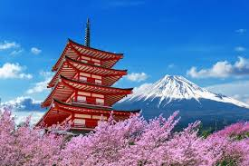
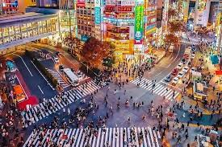
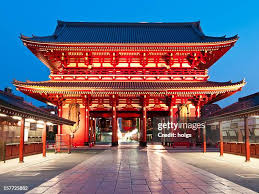
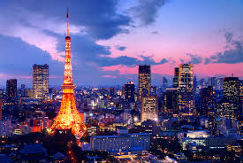

Tóquio impressiona justamente por equilibrar forças que parecem opostas. O contraste entre o antigo e o moderno se manifesta na paisagem urbana,
onde santuários xintoístas silenciosos e templos budistas centenários dividem o espaço com arranha-céus espelhados, telões de LED gigantescos e
que há de mais avançado em tecnologia e robótica. Essa transição entre o passado e o futuro acontece de forma natural a cada esquina. A infraestrutura
da cidade reflete uma organização impecável, visível na pontualidade milimétrica de sua vasta rede de trens e metrôs, que conecta os principais distritos
financeiros e portuários à Baía de Tóquio. Essa eficiência urbana serve de palco para uma cena cultural e gastronômica de prestígio global. A capital
abriga desde restaurantes com o nível máximo de excelência e reconhecimento internacional até pequenas tabernas tradicionais escondidas em ruelas
iluminadas por lanternas de papel. Cada distrito da metrópole possui uma identidade marcante que dita o ritmo da vida noturna e diurna. Enquanto regiões
em negócios e tecnologia pulsam com o movimento de milhões de pedestres e trabalhadores, outras áreas canalizam as principais tendências de moda,
urbana, cultura pop e entretenimento digital. É essa mistura de respeito às tradições, busca incessante pela inovação e dinamismo constante que torna a
uma das cidades mais fascinantes do mundo.

O Shibuya Crossing, localizado em Tóquio, é o cruzamento mais movimentado do mundo e o principal símbolo da modernidade urbana do Japão. O local funciona
no sistema scramble: o trânsito de veículos para completamente em todas as direções para que uma multidão de até 3.000 pedestres atravesse as ruas ao
mesmo tempo, movendo-se de forma organizada em uma coreografia urbana impressionante.O cenário impressiona pelos telões de LED gigantes, letreiros luminosos
e outdoors que cobrem os arranha-céus ao redor, criando uma atmosfera futurista que brilha intensamente dia e noite. Essa energia vibrante transformou o
cruzamento em um ícone da cultura pop, servindo de palco para grandes produções do cinema mundial.Colado à estação de metrô de Shibuya, o cruzamento
também abriga a célebre estátua de bronze do cão Hachiko, ponto de encontro mais famoso da cidade. Para os turistas, prédios e observatórios vizinhos oferecem
perfeitas para fotografar e contemplar do alto o ritmo acelerado da capital japonesa.

O Templo Senso-ji destaca-se como o monumento histórico e espiritual mais antigo de Tóquio, consolidando-se como um destino obrigatório e verdadeiramente fascinante
para viajantes do mundo inteiro. Ao chegar ao local, os visitantes são imediatamente impactados pela grandiosidade de sua entrada principal, que exibe um imponente
portão vermelho e uma icônica lanterna gigante, elementos que se tornaram cartões-postais do país. Cruzar esse portal icônico revela uma atmosfera sagrada de paz,
respeito e devoção, onde a belíssima arquitetura secular se une perfeitamente a rituais tradicionais que atravessam gerações. O complexo oferece uma imersão cultural
completa e inesquecível, sendo o cenário perfeito para registrar fotografias espetaculares, explorar o comércio de amuletos e vivenciar a essência da cultura japonesa em
forma mais autêntica, preservada e vibrante.

Inspirada na arquitetura da famosa Torre Eiffel, a Tokyo Tower destaca-se como um dos monumentos mais fascinantes do Japão, consolidando-se como um símbolo
inconfundível e obrigatório para viajantes do mundo inteiro. Ao chegar ao local, os visitantes são imediatamente impactados pela grandiosidade de sua estrutura metálica
tons de branco e laranja, que transforma o horizonte da metrópole. Subir ao seu observatório revela uma deslumbrante vista panorâmica em 360 graus, onde a imensidão
capital japonesa se une perfeitamente à beleza do Monte Fuji em dias claros. O complexo oferece uma imersão urbana completa e inesquecível, sendo o cenário perfeito para
fotografias espetaculares, contemplar as luzes da cidade ao anoitecer e vivenciar a essência da Tóquio moderna em sua forma mais autêntica, preservada e vibrante.